Unreal Integration 2.02
These methods are used to control the state of Audio Components.
Methods:
Creates a new Audio Component.
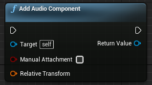
Get the event length in milliseconds.
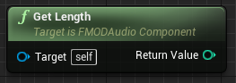
int32 GetLength() const;
Get parameter value from the Event.
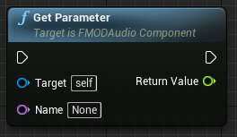
float GetParameter(
FName Name
);
Get parameter value from the Event.
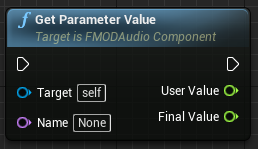
void GetParameterValue(FName Name, float &UserValue, float &FinalValue);
Get the paused state of the audio component.
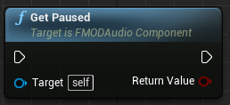
bool GetPaused();
Get a property of the Event.
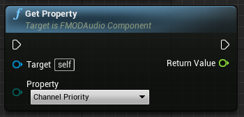
float GetProperty(
EFMODEventProperty::Type Property
);
See Also: EFMODEventProperty
Get the timeline position in milliseconds.
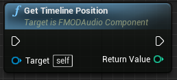
int32 GetTimelinePosition();
Return true if this component is currently playing an event.
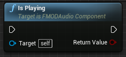
bool IsPlaying();
Allow an event to continue past a sustain point.
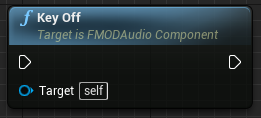
void KeyOff();
Start a sound playing on an audio component.
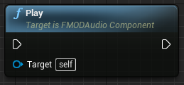
void Play();
Release the current Studio Instance.
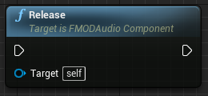
void Release();
See Also: UFMODAudioComponent::StudioInstance
New Event to be used by the FMODAudioComponent.
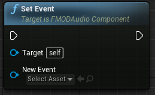
void SetEvent(
UFMODEvent *NewEvent
);
If an Event is currently playing, it will be stopped and the new Event passed in will be started.
See Also: UFMODEvent
Set a parameter of the Event.
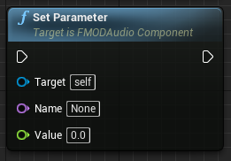
void SetParameter(
FName Name,
float Value
);
Pause/Unpause an audio component.
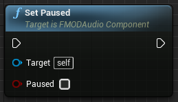
void SetPaused(
bool paused
);
Set pitch on an audio component.
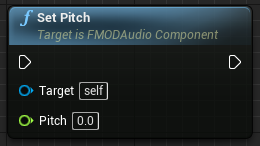
void SetPitch(
float pitch
);
The pitch multiplier is used to modulate the event instance's pitch. It can be set to any value greater than or equal to zero but the final combined pitch is clamped to the range [0, 100] before being applied.
Set the sound name to use for programmer sound.
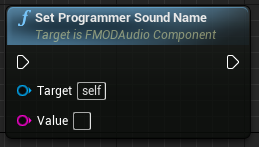
void SetProgrammerSoundName(
FString Value
);
The integration will look up the name in any loaded audio table.
Set a property of the Event.
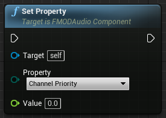
void SetProperty(
EFMODEventProperty::Type Property,
float Value
);
See Also: EFMODEventProperty
Set the timeline position in milliseconds
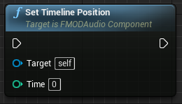
void SetTimelinePosition(
int32 Time
);
Set volume on an audio component.
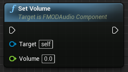
void SetVolume(
float volume
);
This volume is applied as a scaling factor for the event volume. It does not override the volume level set in FMOD Studio, nor any internal volume automation or modulation.
Stop an audio component playing.
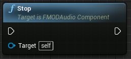
void Stop();